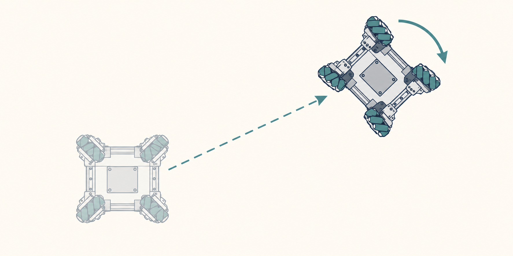

I have joined the new 2026-2027 VEX Robotics season with 12790X Entropic Alpacas. For this new season, we have decided to adopt an X-drive configuration, allowing the robot to move in all directions without rotating itself about its origin. We chose this because this year’s game required a lot of rotation and dexterity in picking pins up and stacking them up.
Working with an X-drive was a novel pursuit for most of us. On the software side, our goal was to be able to use libraries to help us better control the robot, especially for autonomous programming. I quickly discovered that the standard libraries (LemLib, JAR, EZ-Template) did not have proper support for X-drive PID and curves. Searching through GitHub repositories, we stumbled upon a library called HoloLib, running on PROS.
HoloLib turned out to be an amazing tool. We are able to create routes on the X-drive that are quick and efficient. Most importantly, we are able to fully extract the potential of the X-drive in autonomous programming. That resolved our biggest fear – weeks of working out how to create parallel PID loops. This means that we can rotate our robot and move in ways not parallel to the heading of the robot, eradicating the need to take time-consuming curves.

Fascinated, I dug deeper into how HoloLib does it to see if it is really anything much different from differential drives.
PID Loops
As a pretext, PID (proportional-integral-derivative) loops are negative feedback loops that operate on the information of the current position, the target position, and the difference between them.
In a 1-Dimensional System, a PID loop calculates the velocity that the motors should be traveling at through the following equation:
Where P, I, and D are constants that have to be experimentally measured and tuned, through several techniques like the Z-N method, etc.,
and e is the error function, \(e = x_t - x_c(t)\), and \(x_t\) is the target position, and \(x_c(t)\) is the current position as a function of time.
The idea is that the P term serves as an accelerator, the D term as a brake, and the I term as a “memory” term that enforces a final push as the error gets smaller and smaller as time goes on (and so P and D get too small, whereas only I is big enough to push to the end).
Of course though, the world is not 1-Dimensional. Most VRC curve PID loops operate in the \((x, y, \theta)\) frame.
Parallel PID Loops (Curves) - Differential Drive
This is essentially curves in standard tank drives, the much more common approach. In a tank drive, there are two controllable motions: forward velocity (v) and rotation (omega). Each have separate PID loops running in parallel.
This means that when dealing with \((x, y, t)\), there needs to be a way to translate the \((x, y)\) translational vector into a linear error function to plug back into the PID equation. Essentially, the error vector \(\mathbf e= \begin{bmatrix} x_t-x_c\\ y_t-y_c \end{bmatrix},\) is projected onto the robot’s forward unit vector, and the magnitude is taken. So we end up with \(e_{\text{forward}} = e_x\cos\theta+e_y\sin\theta\), and we can then use that scalar quantity in the PID equation for the v component.
The rotational component just uses the wrap of the angular error (a scalar) to calculate omega.
Then, when providing actual velocities to the motors, each motor group (left/right) is provided a linear combination of v and omega:
\[ v_L=v-\frac{B}{2}\omega,\qquad v_R=v+\frac{B}{2}\omega \]where B is the width of the drivetrain.
Parallel PID Loops (Curves) - X-drive
One might think that X-drives would be more complex, given that they have now three directions to work with. But you’d be surprised.
Again, dealing with \((x, y, t)\) coordinates. X-drive actually gives more flexibility, as it can actually travel in each of those dimensions independently.
So now there are just separate errors (ex, ey, eomega) and separate dimensional scalar velocities (vx, vy, omega) without any complex vector operations.
Now, for putting it into action. Assuming a 45° X-drive drivetrain, it is just the principle of linear superposition, same as with the differential drive. Nothing more. So each wheel’s velocity is \(\mathbf{w}=J \begin{bmatrix} v_x\\ v_y\\ \omega \end{bmatrix}\), which looks something like this:
\[ \begin{aligned} w_1 &= v_x+v_y+\omega\\ w_2 &=-v_x+v_y-\omega\\ w_3 &= v_x+v_y-\omega\\ w_4 &=-v_x+v_y+\omega \end{aligned} \]While yes, the brain now needs to run three separate loops instead of two, it is far more elegant and simple. Completely contrary to what I first thought.